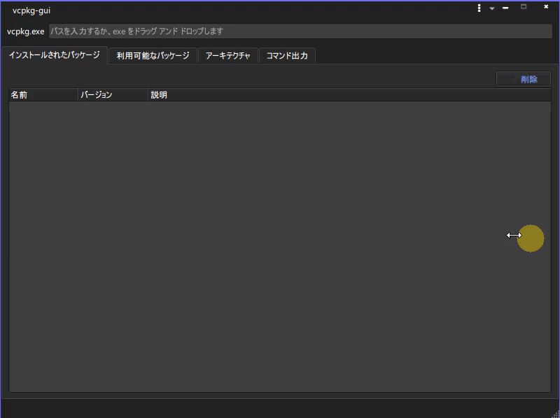

デスクトップアプリ nkf-gui vcpkg-gui UECPPTool Utotribyu その他 vcpkg-gui vcpkgをGUI上でポチポチ操作するツール 機能 ダウンロード リポジトリ 所感  機能 コマンドラインの手入力をGUI上のボタンで操作します ダウンロード vcpkg-gui-x64.7z リポジトリ https://github.com/hananoki/vcpkg-gui 所感 作ったのはいいけど、自分の開発スタイルと合わなくて結局使ってない 世の中にあるライブラリとか見渡せるのでその辺は便利 戻る